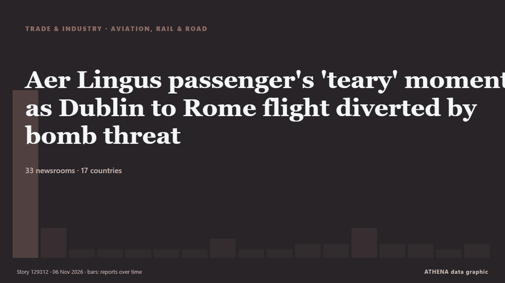

Aer Lingus passenger's 'teary' moment as Dublin to Rome flight diverted by bomb threat

Dublin-Rome flight diverted to France over bomb threat: French government. من Gulf News
نشرته بشكل مستقل 33 مصدرًا في 17 دولة منذ 5 نوفمبر، وأول من نشره Cyprus Mail؛ والتغطية تتراجع. يقدّر ATHENA الخطر بأنه معتدل (2.1/10)، ويعود ذلك أساسًا إلى خطورة الضرر الموصوف ونطاقه الجغرافي والقطاعي. الثقة 88٪ (مرتفعة)، وعدد المصادر المستقلة المؤكِّدة: 33، بمتوسط موثوقية للمصادر يبلغ 73٪. وسائل الإعلام حسب البلد: أيرلندا (9), إيطاليا (8), المملكة المتحدة (5). التغطية: من 5 نوفمبر إلى 6 نوفمبر، 26 ساعة.
لماذا يهم: ينتقل الاضطراب في التجارة أو الصناعة أو البنية التحتية عبر سلاسل الإمداد فيغيّر التكاليف ومواعيد التسليم في أماكن بعيدة.
ما الذي تغيّر: 11 تقارير جديدة من 7 غرف أخبار خلال 24 ساعة حتى 6 نوفمبر.
العنوان الأول: Bomb alert diverts Airbus A320 plane going from Dublin to Rome
تُعرض العناوين بالإنجليزية كما نُشرت.
نظرة سريعة
اختير وقُيِّم وكُتب وفق منهجية ATHENA المنشورة. لا يتدخل أي محرر في الأحداث بعينها. كيف يُنتَج ›
| 05 Nov 08:53 UTC | 29 |
|---|---|
| 05 Nov 10:53 UTC | 4 |
| 05 Nov 12:53 UTC | 0 |
| 05 Nov 14:53 UTC | 0 |
| 05 Nov 16:53 UTC | 0 |
| 05 Nov 18:53 UTC | 0 |
| 05 Nov 20:53 UTC | 0 |
| 05 Nov 22:53 UTC | 2 |
| 06 Nov 00:53 UTC | 0 |
| 06 Nov 02:53 UTC | 0 |
| 06 Nov 04:53 UTC | 1 |
| 06 Nov 06:53 UTC | 1 |
| 06 Nov 08:53 UTC | 4 |
| 06 Nov 10:53 UTC | 1 |
| 06 Nov 12:53 UTC | 1 |
| 06 Nov 14:53 UTC | 0 |
| 06 Nov 16:53 UTC | 1 |
| 05 Nov 09:14 UTC | 0.0 |
|---|---|
| 05 Nov 09:52 UTC | 1.3 |
| 05 Nov 10:08 UTC | 1.8 |
| 05 Nov 10:34 UTC | 3.1 |
| 05 Nov 13:55 UTC | 2.4 |
| 06 Nov 18:51 UTC | 2.1 |
لماذا هذه الأرقام
الأهمية
الخطر
الثقة
التغطية — من نشر الخبر ومتى
العنوان كما نُشر · يفتح الأصل- Cyprus Mail · قبرصEurope hit by second wave of airline bomb threats
- Sydney Morning Herald · أسترالياNew wave of bomb threats hits European flights, media outlets
- Gulf News · الإمارات العربية المتحدةDublin-Rome flight diverted to France over bomb threat: French government
- RTÉ News · أيرلنداAer Lingus plane among 27 flights hit by bomb hoaxes
- Arab News · المملكة العربية السعوديةChaos hits European skies amid passenger jet bomb threats spree
- APA (English) · أذربيجانPlane flying from Ireland to Italy diverted after bomb threat
- France 24 English · فرنساDublin-Rome flight diverted to French military base over bomb threat
- Irish Independent · أيرلنداBomb alert diverts Aer Lingus plane from Dublin as multiple threats ground European flights
- Xinhua (English) — page reader · الصينUrgent: Plane traveling from Dublin to Rome diverted to airbase in France following bomb alert -- media
- The Local France · فرنساDublin to Rome flight diverted to France over bomb threat
- ANSA English · إيطالياFlight from Dublin to Rome diverted to France over bomb threat - report
- TheJournal.ie · أيرلنداDublin-Rome flight diverted and Cork Airport receives bomb threat amid European hoax alerts
- The Straits Times · سنغافورةNew wave of bomb threats hits passenger flights across Europe
- ANSA English · إيطالياFlight from Dublin to Rome diverted to France over bomb threat - report
- NBC News (World) · الولايات المتحدةWave of bomb threats against European airliners triggers diversions and tarmac searches
- Anadolu Agency (English) · تركياPassenger plane diverted to French air base following bomb threat on board: Report
- Newstalk · أيرلنداAer Lingus flight diverted to France after bomb threat
- CNA (Channel NewsAsia) · سنغافورةDublin-Rome flight diverted to France over bomb threat
- NDTV · الهندDublin-Rome Flight Diverted To Military Air Base In France Over Bomb Threat
- The Guardian · المملكة المتحدةMultiple planes diverted as bomb threats to commercial flights reported across Europe – as it happened
- Irish Mirror · أيرلنداAer Lingus Dublin to Rome flight diverted to military base after bomb threat
- Arab Times · الكويتMultiple flights in Europe diverted because of bomb threats after earlier hoaxes
- Times of India · الهندBomb scare forces Dublin-Rome flight to make emergency landing in France
- Free Malaysia Today · ماليزياDublin-Rome flight diverted to France over bomb threat
- ANSA English · إيطالياBomb alerts for several Italian flights, Air Force jets scrambled in Rome
- Irish Examiner · أيرلنداAer Lingus diversion and Cork Airport threat linked to Europe-wide security alerts
- ANSA English · إيطالياBomb alerts for several Italian flights, Air Force jets scrambled in Rome
- Ada Derana · سريلانكاBomb alert diverts Airbus A320 plane flying from Dublin to Rome, French PM says
- Evening Standard (London) · المملكة المتحدةMultiple reported bomb threats to flights for second time in a week
- Newstalk · أيرلنداFirst accounts from passengers on board Aer Lingus diverted flight emerge
- Fox News (World) · الولايات المتحدةMultiple flights in Europe diverted because of bomb threats
- The Irish News (Belfast) · المملكة المتحدةAer Lingus plane from Dublin diverted as multiple bomb threats ground European flights
- Evening Standard (London) · المملكة المتحدةAer Lingus flight passenger describes ordeal as plane diverted by bomb hoax
- Belfast Telegraph · المملكة المتحدةAer Lingus flight passenger describes ordeal as plane diverted by bomb hoax
- The Irish Times · أيرلنداAer Lingus pilot under investigation for refusing to land at French base after bomb threat
- RTÉ News · أيرلنداAer Lingus pilots 'cooperated fully' as flight diverted
- ANSA English · إيطالياBomb alert for flight from Rome that landed in Lisbon
- ANSA English · إيطالياBomb alert for flight from Rome that landed in Lisbon
- ANSA English · إيطالياMore Italian flights affected by bomb alerts
- ANSA English · إيطالياMore Italian flights affected by bomb alerts